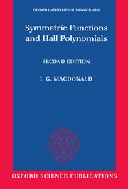
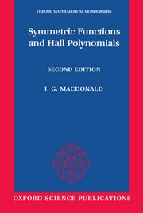

 Office: Blocker 601K
Email:
sottile"at"math.tamu.edu
WWW:
www.math.tamu.edu/~sottile
Frank has an open door office policy;
just walk in when the door is open.
Office: Blocker 601K
Email:
sottile"at"math.tamu.edu
WWW:
www.math.tamu.edu/~sottile
Frank has an open door office policy;
just walk in when the door is open. You may also schedule an appointment.
Seminar teas on Monday and Fridays (2:30 PM) are a good venue for catching
faculty members, including Frank.
Young Tableaux, by Wm. Fulton, Cambridge University Press, 1997.
Another good book is the classic Symmetric Functions and Hall Polynomials
by Ian Macdonald. Frank has several copies of all three.